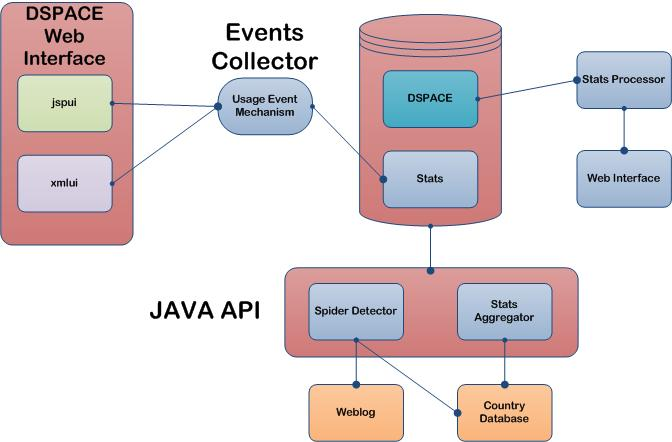
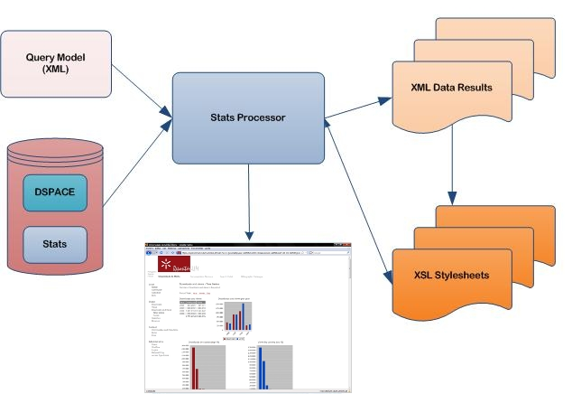

The relevant usage events are collected from DSpace user web interfaces by plug-in mechanism
and stored on a specific database schema.
Other components apply procedures of spider detection, access origin detection and data aggregation for the data.
The resulting statistics are shown on a Web Interface.
The Web interface is flexible, allowing configuration according to a base structure of the information display in
the user interface. The structure of the system is based upon the organization of information in two
dimensions: type of information (access, content, administrative) and aggregation level (repository,
community, collection, item).
The following diagram represents the main components of the system.

Statistics System Architecture
The following sections describe the various functional aspects of the Statistics System.
The Events Collector is responsible for the gathering and storing the usage events on DSpace. This mechanism does not depend on DSpace logging mechanism like it was in previous versions of the Stats add-on. It is based on the UsageEvent plug-in patch developed by Mark H. Wood.
The stored events data will be used as the source for the calculation of the statistics.
Implemented events on JSPUI web interface:
The events processed are: view_item, view_bitstream, search, start_workflow, advance_workflow, and login.
Implemented events on XMLUI web interface:
The events processed at this moment are: view_item and view_bitstream.
The information collected for each event is as follows:
| Event | Information |
| view_item |
date - date of access time - time of access item_id - item accessed session_id - session identification user_id - user accessing ip - IP of the computer accessing country code - country code of the IP |
| view_bitstream |
date - date of access time - time of access bitstream_id - bitstream accessed item_id - item accessed session_id - session identification user_id - user accessing ip - IP of the computer accessing country code - country code of the IP relative value - important: the add-on implements a relative concept of downloads. As downloads are presented in the context of items and each country may have more than one file the number of downloads for the items is dependent on the number of files it has. Each file download counts a proportion to 1 download (1 / number of files). |
| search |
date - date of search time - time of search scope - context of the search (site, community or collection) scope_id - identifier of the community or collection in case of a context search query - search expression. Used to compute most used search words. session_id - session identification user_id - user accessing ip - IP of the computer accessing country code - country code of the IP |
| workflow |
date - date of workflow event time - time of workflow event workflow_item_id - identifier of workflow record item_id - identifier of the item collection_id - identifier of the collection state - code identifying what step on workflow (Submission; Step 1; Step 2 or Step 3) session_id - session identification user_id - user accessing ip - IP of the computer accessing country code - country code of the IP |
| login |
date - date of access time - time of access session_id - session identification user_id - user accessing ip - IP of the computer accessing country code - country code of the IP |
While catching and storing events, the Event Collector is also responsible for the country detection of accesses. This detection uses the free Maxmind GeoIP database.
The add-on includes a Maxmind GeoLite country database but we recommend that you make periodically upgrades. (available from the following link: http://www.maxmind.com/app/geoip_country).
The Data Model is mainly constituted by tables that store the data, and views that resume the more complex data. SQL queries used to retrieve the information from the database, combine the information from the data model of the Stats and the data model of DSpace.
Some events table, for instance views, downloads and searches, could grow rapidly.
To improve Stats Web Interface performance and response time the raw events table are aggregated by month and stored in other tables.
| Event | Aggregations |
| view_item and view_bitstream |
By month By month and country By month and community By month and collection By month and item By month, community and country By month, collection and country By month, community and item By month, collection and item By month and metadata fields (configured on table stats.metadata_aggreg) By month, metadata fields and community By month, metadata fields and collection |
| search |
By month By search words and month |
At the same time this component performs one part of the mechanism of Spider treatment. This treatment consists on flagging the usage events that are made by (already) identified Spiders. It checks the events against the spiders and agents registered on the system since the last aggregation and reflects that information on the raw and aggregated events tables. Because of this, even at the raw event level, the web user interface only displays information that was previously processed by StatsAggregator.
This add-on version implements the concept of a closed date (stats.control table) wich means you can tell the StatsAggregator not to touch events prior to some date, allowing you to freeze the past statistics depending on your needs and preferences. All the events after closed date are subject of Spider detection (automatic or by human intervention). We recommend that you keep the open period (period between closed date and the current day) not greater than one month or two. That means you have to make the human part of spider detection at least once per month. See the next section.
As said in the install instructions you should schedule this procedure to run periodically. We recommend to run it on a daily basis (at night). You can run it to aggregate only the unaggregated events or to clean the aggregations (or both). Due to the possible changes on the DSPace item metadata we recommend to run it once in a while in clean/aggregate mode. When you clean the aggregations, while the aggregating is made even for the closed period, the spider treatment part is made only for the open period (after closed date).
$DSPACE_BIN/bin/stats-aggregate
usage: StatsAggregator
-a,--aggregate aggregate the unaggregated tables
-c,--clean clean the current aggregation
-h,--help help
-t,--tables Run the clean and/or aggregation for the
specified table(s).
Possible values are:
all, view, download, search
Separate multiple with a comma (,)
Default is all
-v,--verbose print aggregation logging to STDOUT
The detection of spiders uses the Web Server accesses as an information source. It could be based upon the conventional behaviour of a well-behaved spider (before initiating the crawling it always makes an initial access to the file robots.txt). So, when an access is made to this file, the IP and web agent of the machine that has undertaken the access could be registered and considered as a potential spider in the future.
Nevertheless, due to the following situations:
We consider that it would be more effective to develop a two step mechanism, one automatic and another who needs human intervention, for instance executed by the system administrator manually.
The first step is made periodically in the system with the execution of a procedure
(/dspace/bin/stats-detect-spiders) that will be responsible for processing the
web log file and detect machines that behave as spiders.
This procedure doesn't immediately consider the detected machines as spiders.
It stores them into a staging area (temporary tables) that can be analysed later by the system
administrator, who will have the final decision of considering them as spiders or not.
Important: The SpiderDetector keeps a record (table stats.control) of the last line processed on the log, so you can call it by pointing to the current Apache weblog. You only have to have special attention when you roll your weblog. If you start a weblog from scratch make sure you set "last_line_log" of table stats.control to null.
For each IP/agent detected, StatsDetector gives it some kind of "suspicious level" based on the following concepts:
The IP has an agent already flagged as agent
This IP's have an high probability of being spiders, because they have an agent already marked as spider.
Has an agent that looks like a spider
The system has a table of regular expressions (stats.temp) with several expressions that a spider agent could have.
The IPs agents are compared against this table. The IPs detected in this category still have an high
probability of being spider, but decide with care.
Accessed robots.txt
Could be a well-behaved spider accessing robots.txt, but at the same time, could be someone trying to access robots.txt from a
browser. See the agent name and decide using additional sources, for instance, spiders databases available on the Internet.
It is based on the user analysis of the staging area. The stats web interface has a area where you can see the various listings of the staging area. This area lists the weblog analysis results and some additional listings related to sessions and IPs that were marked to be watched.
In this second step, after analysing each one of the temporary registries, the administrator
has the possibility of registering machines in the system as spiders executing the
$DSPACE_BIN/stats-spider -a ip,agent.
Every access already stored for that machine after the closed date will be eliminated from the aggregations, and
marked as spider at raw event event tables.
If you have not sure about an ip you can flag it to be watched in the future. The sessions analysis listings
are organized to show information to this "keep whatched" IPs. To flag an IP to watch int the future execute the
$DSPACE_BIN/stats-keepwatched -a ip,agent.
In the first weeks of the system production it's advisable to perform the manual procedure regularly (daily) because it's during this period that most of the crawlers will be detected. After this period the manual procedure can be done in longer periods (weekly or monthly)
Note: Based upon our experience on using the add-on for more than 3 years, we already have an long list of spiders and agents. If you are interested in this list contact us. We can send you the listing. We think this way you can save lots of time.
The Stats Processor is the component responsible for launching the SQL queries into the database, individually for each statistic, returning the results and processing them to be displayed within the Web Interface.

Stats Processor Architecture
The component that we call Query Model allows the following actions: the configuration of the various statistics, the SQL queries to submit to the data base and the way that they will be organized in the Web Interface.
The model is composed by:
stats-admins.xml
Definition of the user groups that will have access to each statistic independently of user access policies.
By default the system is configured to allow Anonymous group to access all the stats, but we recommend you change that.
stats.xml
Definition of each statistic. Every statistic will correspond to an option in the lateral navigation of the Web Interface.
The statistics are organized into 2 dimensions: the type of statistic (access, content, administrative) and the level of
aggregation (global, community, collection, item). These 2 dimensions are also used to build the navigational component
of the interface.
Each statistic is composed by 1 or more information blocks (Data tables, charts, static HTML, etc)
stats-queries.xml
Definition of SQL queries that will be executed for each Data table block defined in the
previous file. A certain query can be used in more that one statistic.
stats-charts.xml
Definition of Charts that will be executed for each chart block defined in the
previous file. A certain chart can be used in more that one statistic.
xsl/*.xsl
The result processor will transform the result set according to defined stylesheet schema .
Note: Like in other files in DSpace you can implement multilanguage interfaces, by creating specific files (stats.xml, stats-queries.xml, stats-charts.xml) with a suffix representing the language. Example stats_pt.xml.
The Web interface will be built based upon the query model. When a statistic is selected the Stats Processor will generate XML results for that particular query and will be transformed and presented accordingly.
Web Interface
Besides the definition of the groups that will have access to each one of the statistics (statslist.xml), data level policies can also be defined.These policies are based in the permissions schema of DSpace.
For this purpose, a new permission in DSpace (VIEW_STATISTICS) was created and it can be attributed to users groups, objects, communities and collections.
So, for example, if we want a user group to have access to a certain statistic at the community level, we firstly define the group within the AccessGroups and locate the required statistic within the file statslist.xml and we attribute the permission VIEW_STATISTICS for that group in the community we want.
 |
URL: https://repositorium.sdum.uminho.pt email: repositorium@sdum.uminho.pt |